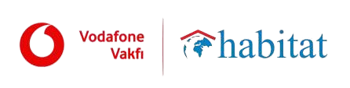

Geleceğin yıldızları, bugünden parlıyor! ⭐

Skills Upload Jr iş birliğiyle
Başlamak için İleri tuşuna bas ▶ · Tam ekran için F11 🖥️
Bugün gerçek bir makine öğrenmesi modeli eğiteceğiz.
Ama önce… biraz keşfe çıkalım!
Emin misin? Telefonunu açtıysan… büyük ihtimalle evet!
💬 Tartış: Yanındaki arkadaşınla 1 dakika konuş — bugün yapay zekânın sana yardım etmiş olabileceği 3 an bul.
İpucu: Telefon, tablet, televizyon… 📱
Hepsi öğrendi — kimse onlara adım adım kural yazmadı!
Bilgisayarın adım adım programlanmadan,
örneklere bakarak örüntüleri fark etmesi ve karar vermesi.
🧠 Tıpkı senin gibi: Kimse sana "kedi tanıma kuralları" öğretmedi. Yüzlerce kedi gördün… ve öğrendin!
Bilgisayara gösterdiğimiz örneklere eğitim verisi denir. Bu kelimeyi unutma — bugün çok kullanacağız!
Örneklerden mi öğreniyor, yoksa hazır kurallarla mı çalışıyor?
Uzak bir gezegende bazı şeylere "Blub" deniyor. Kuralı kimse söylemeyecek — örneklere bak, kendin bul:
💡 Fikir: Ya bir bilgisayara "balık" ile "çöp" arasındaki farkı öğretebilseydik? Robotlar okyanusu temizlerken çöpü toplar, balıklara dokunmazdı!
Yapay zekâya öğreteceğimiz gibi: gördüğün şey balık mı, çöp mü?
İşte bu etiketleme işine eğitim denir. Etkinlikte aynısını yapacaksın — ama gerçek bir modelle!
Ona hiç yengeç göstermezsen, yengeci "çöp" sanabilir! 🦀
Yanlış etiketlersen, yanlış öğrenir. Buna önyargı (bias) diyoruz.
Çözüm: daha çok ve daha çeşitli eğitim verisi!
💬 Tartış: Sesli asistan seni hiç yanlış anladı mı? Sence neden?
🎯 Olası cevap: Asistan, eğitim verisinde en çok duyduğu sesleri iyi anlar. Çocuk sesleri, farklı aksanlar veya gürültülü ortamlar eğitim verisinde azsa seni yanlış anlayabilir. Yani sorun sende değil, veride! 😉
Videoyu izle: Makine öğrenmesi nedir? (kulaklık takabilirsin)
YZ'yi eğit: Resimleri "balık / balık değil" olarak etiketle, sonra YZ'nin okyanusu temizlemesini izle.
Veriyi genişlet: Diğer deniz canlılarını da ekle — YZ daha akıllansın.
Yeni kelimeler öğret: "Kızgın" ya da "eğlenceli" balık nedir? Sen karar ver — YZ senin gibi düşünmeyi öğrenecek!
İpucu: Ne kadar çok örnek etiketlersen model o kadar iyi olur. Acele etme, "Train More" ile devam edebilirsin.
Her kutuya tik at, buton açılsın:
Bundan sonrası etkinlikte — bu sayfaya dönmene gerek yok. İyi eğlenceler! 🐟